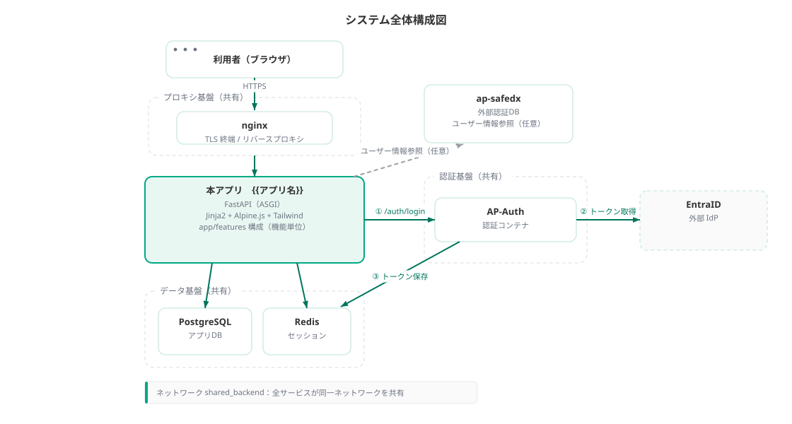

02 基本設計 · 01/07
システム構成
撮るほど（toruhodo）のシステム全体構成・技術スタック・環境・配信方針を定義する。PWA として石碑・案内板の撮影から OCR＋AI 解説、旅の記録の永続化までを担う。
確定メモ
技術選定の正は ADR-0003。実装パスはリポジトリ root の src/。prototype/ は UI 参照用の静的モックであり本番コードではない。UI 正本は企画書 README と 撮るほど UIデザイン.dc.html。
全体構成
Browser（PWA・モバイルファースト）
→ Next.js App Router on Vercel
├ Middleware: session cookie ゲート（保護ルート → /login）
├ Better Auth（/api/auth/*）→ Google OAuth（GCP）
├ Server Actions / Route Handlers
│ ├ 写真 upload → Vercel Blob（photoUrl）
│ ├ Claude Vision API（OCR＋解説 JSON・server-only）
│ └ records / user_settings CRUD
├ Drizzle ORM → Turso libSQL
│ tables: users, sessions, accounts, verifications,
│ records, user_settings
└ クライアント: MapLibre GL JS（旅の記録地図）- ホスティング — 本番は Vercel。ローカルは
next dev。 - データ — ログインユーザー単位で Turso に永続化。写真は Vercel Blob。派生値は永続化しない。
- 認証 — Better Auth + Google OAuth（GCP）。未ログインは
/login（S-00）へリダイレクト。 - AI — Claude Vision API を 1 リクエストで OCR 原文・やさしい／くわしい解説・ルビ・補足・partial/failed を JSON 返却。
- 地図 — MapLibre GL JS をクライアントで描画。ピンは records の lat/lng。

クリックで拡大
技術スタック
| 分類 | 採用 | 備考 |
|---|---|---|
| フレームワーク | Next.js 16 App Router + React 19 + TypeScript | Server Components + Server Actions / Route Handlers |
| ORM | Drizzle ORM | src/lib/db/schema.ts |
| DB クライアント | @libsql/client | Turso / libSQL |
| データベース | Turso（libSQL） | ローカル: turso dev --db-file local.db :8080 |
| 認証 | Better Auth | セッション Cookie + cookieCache |
| OAuth | Google（GCP） | GOOGLE_CLIENT_ID / GOOGLE_CLIENT_SECRET |
| 写真ストレージ | Vercel Blob | photoUrl として records に保持 |
| AI | Claude API（Vision） | server-only。OCR＋解説を 1 リクエストで JSON |
| 地図 | MapLibre GL JS | クライアント描画。淡色スタイル想定 |
| ホスティング | Vercel | Git 連携デプロイ・PWA 配信 |
| スタイル | Tailwind CSS v4 + shadcn/ui + デザイントークン | Shippori Mincho / Zen Maru Gothic |
| ミューテーション | Server Actions / Route Handlers | records・settings・scan 系 |
環境構成
| 環境 | 識別 | アプリ | DB / 外部 | 用途 |
|---|---|---|---|---|
| ローカル | local | npm run dev（:3000） | turso dev → http://127.0.0.1:8080 / Blob・Claude は開発キー | 開発 |
| プレビュー | preview | Vercel Preview | リモート Turso（共有 or ブランチ DB） | PR 確認 |
| 本番 | production | Vercel Production | リモート Turso / Blob / Claude | 一般利用 |
環境変数の正はリポジトリ root の .env.example（ローカルは .env.local）。主要キー:
TURSO_DATABASE_URL/TURSO_AUTH_TOKENBETTER_AUTH_SECRET/BETTER_AUTH_URL/NEXT_PUBLIC_BETTER_AUTH_URLGOOGLE_CLIENT_ID/GOOGLE_CLIENT_SECRETBLOB_READ_WRITE_TOKEN（Vercel Blob）ANTHROPIC_API_KEY（Claude Vision）
Google OAuth の承認済みリダイレクト URI:
- 開発:
http://localhost:3000/api/auth/callback/google - 本番:
https://<your-domain>/api/auth/callback/google
起動順序（ローカル）
npm install- ターミナル1:
npm run db:dev（turso dev --db-file local.db→ :8080） cp .env.example .env.local等で secret・各種 API キーを設定npm run db:push（スキーマ適用）- ターミナル2:
npm run dev→ http://localhost:3000 - Google ログイン → ホーム（S-01）。初回はさいきんの記録が空

クリックで拡大
CI/CD・デプロイ概要
- デプロイ — Vercel の Git 連携。main（または既定ブランチ）→ Production、PR → Preview。
- ビルド —
npm run build（Next.js）。PWA マニフェスト・サービスワーカー方針は詳細設計に従う。 - DB — スキーマ変更は Drizzle マイグレーション /
db:pushを運用手順に従いリモート Turso へ適用。 - Blob / Claude — 本番環境変数を Vercel に設定。キーはクライアントに露出しない。

クリックで拡大
リポジトリ構成（要約）
src/
app/ # ルーティング（login, scan, result, history, map, settings, api/auth）
actions/ # Server Actions（records / settings / scan）
components/ # UI（shadcn + デザイントークン）
lib/
auth*.ts # Better Auth / session
db/ # Drizzle + schema（records, user_settings, auth）
ai/ # Claude Vision（server-only）
blob/ # Vercel Blob アップロード
docs/ # 企画・要件・設計
prototype/ # 静的 hifi プロトタイプ（本番ではない）
クリックで拡大
撮るほど 設計書 · インデックス